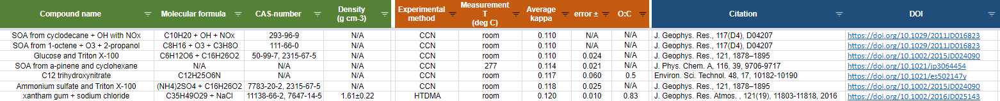

Water condenses on particles that are suspended in the atmosphere. Once the size of these particles reaches a critical threshold, the particles growth rapidly into cloud droplets. These particles are called cloud condensation nuclei (CCN). The ability of particles to serve as CCN depends on their size and their chemical composition. Köhler theory describes this process.
The hygroscopicity parameter kappa is one way to paramaterize a particle's ability to serve as CCN in the atmosphere. Detailes are given in the cited references below. Several GitHub repositories are available with code related to calculating kappa.
Kappa: https://github.com/mdpetters/kappa
This repository contains code in various languages to relate the hygroscopicity parameter kappa with hygroscopic growth factor or critical supersaturation.
Database with kappa values: https://mdpetters.github.io/kappa/index.html

The repository contains a summary of experimentally derived values for kappa from hygroscopic growth and cloud droplet activation data. The database includes relevant information regarding molecular structure, experimental methods, and original data sources.
KAppa Functional Group Analysis (KAFGA): https://github.com/mdpetters/KAFGA
Organic particles suspended in air serve as nucleation seeds for droplets in atmospheric clouds. Over time their chemical composition changes towards more functionalized compounds. This work presents a model that can predict an organic compounds' ability promote the nucleation of cloud drops from its functional group composition. Hydroxyl, carboxyl, aldehyde, hydroperoxide, carbonyl, and ether moieties promote droplet nucleation. Methylene and nitrate moieties inhibit droplet nucleation.
KAFGA is MATLAB/GNU Octave code to predict the hygroscopicity parameter kappa for organic compounds from functional group composition.
Petters, M. D. and Kreidenweis, S. M.: A single parameter representation of hygroscopic growth and cloud condensation nucleus activity, Atmos. Chem. Phys., 7, 1961–1971, https://doi.org/10.5194/acp-7-1961-2007, 2007.
Petters, M. D. and Kreidenweis, S. M.: A single parameter representation of hygroscopic growth and cloud condensation nucleus activity – Part 2: Including solubility, Atmos. Chem. Phys., 8, 6273–6279, https://doi.org/10.5194/acp-8-6273-2008, 2008.
Petters, M. D. and Kreidenweis, S. M.: A single parameter representation of hygroscopic growth and cloud condensation nucleus activity – Part 3: Including surfactant partitioning, Atmos. Chem. Phys., 13, 1081–1091, https://doi.org/10.5194/acp-13-1081-2013, 2013.
Petters, M. D., Kreidenweis, S. M., and Ziemann, P. J.: Prediction of cloud condensation nuclei activity for organic compounds using functional group contribution methods, Geosci. Model Dev., 9, 111–124, https://doi.org/10.5194/gmd-9-111-2016, 2016.